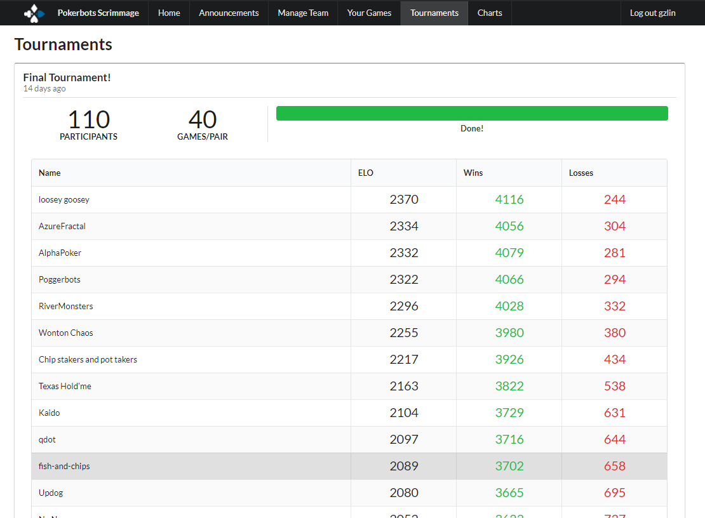
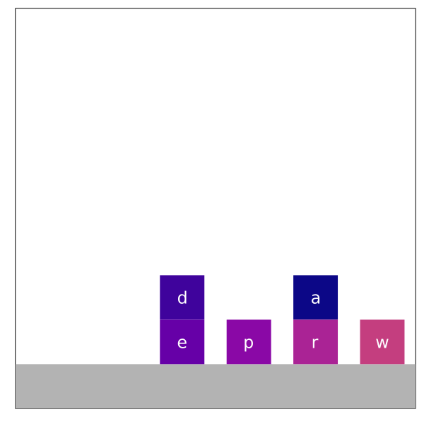
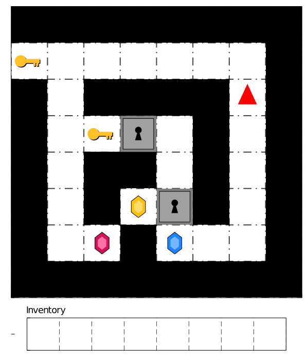
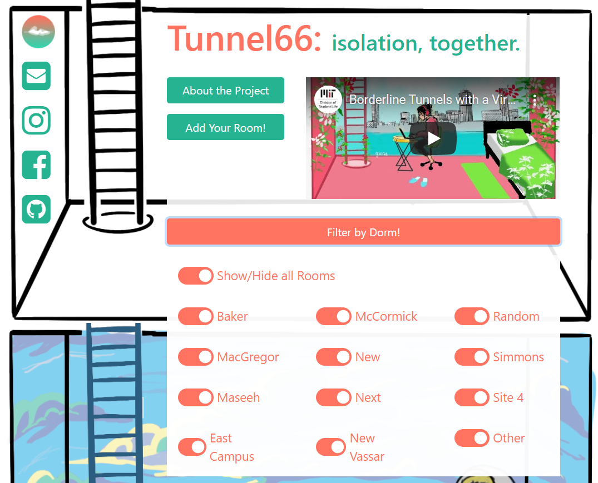
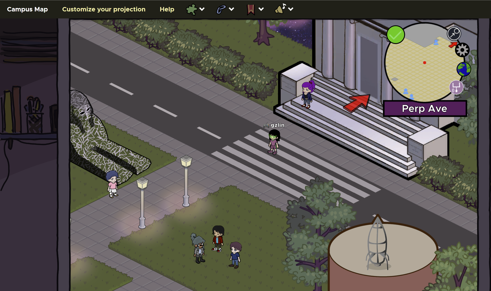

IAP Projects! | February 2021
Independent Activities Period (IAP) is MIT's January term where students can take classes, enter competitions, work externships, teach abroad (pre-COVID), or just chill. In a way, IAP is an extension of winter break: a time for doing nothing, yet the perfect time to do everything you are too hosed to do during a normal semester. Well, I might have taken "do everything" a bit too literally... project dump below!
Pokerbots [WIP]
This IAP, I took 6.176 Pokerbots, a student-run IAP class.
According to their site, Pokerbots
“is a computerized poker
tournament. Teams have one month to program a completely autonomous pokerbot to compete against other teams.”
Having very minimal poker knowledge, I was prepared
to declare the endeavor successful if I saw
any incremental improvement in my poker abilities through this class.
Every year, the class introduces some variant of Heads-Up No-Limit Texas Hold’em poker as the game being played.
This year’s
variant, No-Limit Blotto
Hold’em, featured the following twist, which adds complexity via hole formation and board allocation
strategy,
and tightens the expected starting hand ranges per board.
"The main modification is that players are dealt 6 cards and have to form three poker hands across three playing boards, instead of the normal 2 cards played on one board. Each board is resolved separately, with the 12 dealt cards drawn without replacement from a 52 card deck and the board cards drawn independently from the remaining 40 cards. At the start of each hand, the boards are inflated with 1, 2, and 3 big blinds, with players choosing which pair of hole cards to send to each of the three boards preflop."
The class provided basic skeleton poker bots and a scrimmage server to upload and test bots against each other. The class lectures taught basic poker strategy and bot improvements, including finding Nash equilibria/counterfactual regret minimization (CFR) and how to leverage computationally expensive Monte Carlo simulations to evaluate hand strength. Python bots used the eval7 hand evaluation library. Beyond obvious bot improvements, my pokerbots partner Jacob and I tried numerous heuristics for card evaluation and even threw a neural net (albeit at the last minute) at the problem, all in vain, settling on our best-performing bot that played aggressively with tight bets, for the final tournament. Still, we ended placing 11th out of 110! The second place team coded the recommended Nash optimal strategy, while the first place team implemented a more exploitative strategy to gauge the opponent's strategy and hand strength in order to counter play and bluff effectively. Their strategy factored in the opponent's pre-flop raise (PFR) and voluntarily put in pot (VPIP) stats to gauge opponent tendencies and dynamically adjust bluffing; they took advantage of eval7's equity calculator to simulate hand strength more effectively by considering opponent hand ranges; and they sized bets appropriately to make pot odds calculations seem favorable to bait opponents into betting on weaker hands.

CogSci Paper
For the final project in 9.66/6.804 Computational Cognitive Science, I worked with my friend Joie and classmate
Arwa under the mentorship of Xuan, a PhD student, to extend Xuan's
prior research on Bayesian goal inference which
models planning agents as boundedly-rational probabilistic planners subject to computational constraints which can
lead to suboptimal behavior in the form of mistaken plans and actions in two game-like planning domains (Block
Words and
Doors, Keys, &
Gems). In the work, Xuan presents a Sequential
Monte Carlo algorithm for goal inference,
Sequential Inverse Plan Search (SIPS), which incrementally extends inferred plans as new actions are
observed.
For our 9.66 project, Joie, Arwa, and I designed and conducted Bayesian Theory of Mind experiments comparing SIPS goal inference with human goal inference in the presence of planning agent mistakes. Over IAP, we continued working on the experiments and writing up our work in a paper submission to the 2021 CogSci Conference. In our work (published on arXiv), we define three categories of mistakes (goals, plans, actions), incorporating them into SIPS as various types of noise and designing observation trajectories exhibiting the three types of mistakes in the two planning domains. With these observation stimuli, we conducted Mturk experiments to compare human goal inference with SIPS goal inference, developing experiment interfaces (AngularJS + Firebase webapp) to present the stimuli for both domains, collect inferred goal probabilities, and quality check that participants understand their task. The results of our experiments demonstrated that in both planning domains, our modified SIPS model better explains human inferences than alternative models.
Update: Our paper was accepted for a talk and presented at CogSci in June 2021.
 
Big Dijkstra Energy
With my amazing and artistic friends Audrey, Margaret, and Penny, we started Big Dijkstra Energy (BDE), a webcomic
of CS and math puns/pickup lines in December, inspired by MIT Confessions. Over IAP, we held a pickup lines
tournament for Bad Ideas Weekend
(100+
submissions and 75+ Zoom attendees 😳), collaborated with MIT Mind Hand Heart Innovation Fund on a special
surprise for returning
undergraduates (making 2000+ Valentine's day postcards!), and were invited to take over the official @mitadmissions Instagram for Valentine’s
Day week! We
wrote a thicc
and ~emo~ blog post for Mind Hand Heart (brought me to tears) about BDE’s
conception, projects, and
impact. I don't think my words could do BDE as much justice as the eloquence of Audrey and everyone
else, so read the blog post! Here's a small snippet (from the blog) of my own thoughts and feels:
>> Click to
read Official MHH Blog Post <<
Big Dijkstra Energy combines all of my favorite things-- art, MIT Confessions, and CS (in some sense, haha)--
and
I'm eternally grateful to have amazing, talented, like-minded friends who are also excited to do a project like
BDE. It's like we really share the same wavelength (or brain cell, or circus), and our group calls have really
helped me get through these last few months of remote learning <3. I've also been surprised at the amount of
interest that the comic has garnered, in and outside of the MIT community. Perhaps there's some truth to the
lonely CS nerd stereotype (oops!), but in these weird and isolating times, we need all the love we can get, and
I
can't think of a project I've worked on in my last 2.5 years at MIT that embodies the camaraderie, spontaneity,
and quirkiness of the 'tvte as much as BDE.

UA CovidHack
From January 8-10th, MIT Undergraduate Association (UA) ran an ideas hackathon to crowdsource proposals
for COVID-safe improvements to campus life in the spring, focusing on four tracks: outdoor spaces, virtual
community, remote
learning, and policy awareness. The pitches were presented to administrators, with the guarantee that the winners
from each track would be implemented come spring. Like most of the 100+ teams that entered, my friend Penny and I
were baited by the complimentary Hydroflasks promised to all teams who submit a pitch. During team formation, we
were joined by a wonderful new friend, Daniel. Though all three of us had signed up just for the
Hydroflasks, we ended up going hard and spending our entire Saturday (submitted at 5am ET…) on refining our
proposal and crafting our pitch, below, which was heavily inspired by a similar system that I used during my
internship at Two Sigma to opt into weekly Slack calls with up to five other interns or full-timers. We didn't end
up
winning,
but I'm really happy with how the final submission came out, and I am one friend (and Hydroflask) richer for
it.
Here are our slides and
proposal.
Borderline
One of my dearest clubs, Borderline has had a busy
IAP. In addition to other side projects and workshops, we have been
focusing on designing a mural installation for an enormous 30’ x 7’ Story Wall in MIT’s newly built Kendall Square
Welcome Center, including a lot of iteration and back-and-forth meetings with MIT administrators. I'm so
excited
that, after a year, Borderline will be able to paint murals once again this spring :D
More recently, I've been working with my Co-Publicity directors, Philena and Yiming, to redesign Borderline's websites, including the main site and Tunnel66. Changes to Tunnel66 have been finished, including a redesign of the header room, and the option to filter by dorm. We hope these changes will allow the site to be used as a platform for MIT undergraduates to feel more connected to their neighbors outside the pod system, and once again showcase dorm culture for c/o 2025 prefrosh this upcoming Campus Preview Weekend/CP*.
We applied the same toggle/filtering logic to make the murals on our main site selectable by year, and redesigned our main/splash page to be more informative, flattening the page hierarchy of the site and making it easier to navigate! Though the changes may be subtle, I have much more peace-of-mind knowing these improvements have been made :)

Mystery Hunt
According to their website, “The MIT Mystery Hunt is a
puzzlehunt competition that takes place on the MIT campus every year during the Martin Luther King, Jr. Day
weekend. The hunt challenges each participating team to solve a large number of puzzles which lead to an object
(called a “coin”) hidden somewhere on campus.” The Wikipedia page provides a more comprehensive description of the
competition and its rich history. The puzzles are quite challenging and extremely well thought out, stacking
layers of complexity and hidden meanings in the form of logic problems, riddles, and metas. This year's hunt
featured hundreds of puzzles, but what stood out to me even more was the platform. Due to COVID, Mystery Hunt 2021
had the unique
challenge of being entirely virtual, whereas Mystery Hunts of the past were on-campus events which had teams
exploring MIT campus and solving some of
the puzzles, which required physical props/setup, in person.
This year's Mystery Hunt organizers (✈✈✈ Galactic Trendsetters ✈✈✈: the winning team of last year's Mystery Hunt, as per tradition) more than rose to the challenge; really, they exceeded all my expectations. They recreated an alternate-universe MIT (⊥IW- Perpendicular Institute of the World) as an MMO game which integrated with the puzzles nicely; the interactivity, explorability, creativity, and attention to detail of the world they built is truly astounding. But don't take my word for it, you can check out ⊥IW yourself here!
Though I'm very much a puzzlehunt novice, I was fortune that my friend Mindren invited me to join the team NES, started last year by some MIT Next House residents. The team was fairly large and included some seasoned puzzlehunt veterans and huge brains. At least one member has written his own puzzlehunts, one of which Mindren and I did later in IAP. NES used Discord to collaborate on puzzles throughout the weekend, and maybe I'm just a Discord noob, but I was blown away by how streamlined and efficient the NES Discord was. Voice channels were created for each puzzle, so you could see what puzzles other people were actively working on when you hopped onto the server. Discord bots automatically created Google Docs for new puzzles, and you could easily ping other puzzlers and tag puzzles. Though I solved very few puzzles myself, I had a great time, and NES ended up solving over 170 puzzles and finishing in 15th place!
